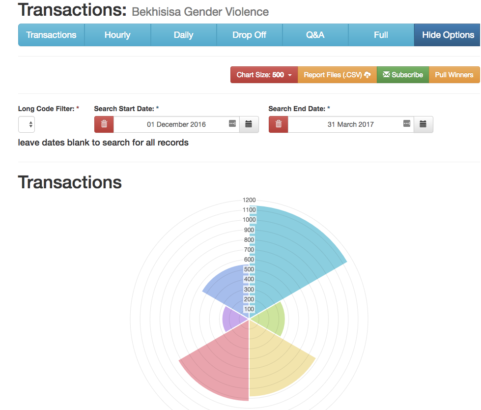
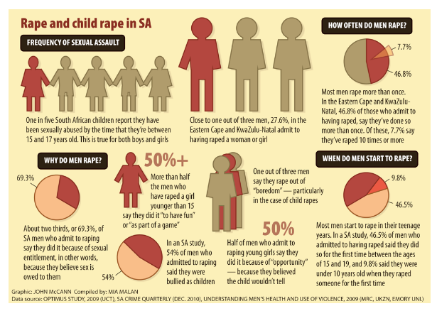

“Diepsloot has some of the highest rates of violence against women ever recorded in South Africa: they are more than double those reported in national studies.”
In October 2013 the bodies of two little girls, one three years old, the other, her two-year-old cousin, were found in a broken public toilet near their home in Diepsloot, a township in northern Johannesburg. Bhekisisa visited the family in 2015 and reported on the disturbing prevalence of rape in the community.
Then in early 2016 Sonke Gender Justice, a non-governmental organisation, and the University of the Witwatersrand, as part of a research project looking into gender violence in Diepsloot, interviewed 2,600 men, aged 18 to 40 years, living in the community. They found that rape and physical abuse rates are more than double those reported in national studies.
More than half (56%) of the men in the study said they had used physical or sexual violence against women. In national studies 14% of men reported enacting violence towards women.
Diepsloot has a network of NGOs and community organisations that offer support to victims of violence. Bhekisisa decided to set up a helpline/data project to try to help both the victims and the service providers in Diepsloot.
The project was named Vimba, a Zulu word, by the five community stakeholders who are the partners in the project: because if somebody shouts “Vimba!”, everybody will stop to see what they can do to help.
The Vimba Helpline has two functions. The first is to make it is easier for women and children who are victims of violence and abuse in Diepsloot to access the services and support available there. The second is to collect information about violence against women and children in the community that could be useful to the service providers.
It is a free cell phone-based service that uses USSD technology, which makes it possible for people to use the helpline even if they don’t have data or airtime. It also doesn’t matter what kind of cellphone they have, the service works on even the most basic phone.
Cellphones are widespread in Diepsloot, 90% of households have access to one, but only about one in four households have access to the internet. Up to half the working age population is jobless, a social audit by Sonke Gender Justice found. And those who do work don’t make very much money. As a result, data is a luxury.
Vimba has been set up so that all you need a cellphone with a charged battery. People who dial the number are asked a series of questions about where they are and the type of help they need. When they answer all of the questions they are sent an SMS telling them where to go to get help in Diepsloot and a phone number they can contact. If they indicate that they have been raped, they are also sent an SMS with some information about what to. The calls and SMSes are reverse-billed.

At the back-end the answers given by the callers are collected and visualised in real-time on a dashboard which some of the project’s partners have access to.

Monthly data is downloaded from the USSD dashboard and analysed to make it easier to spot trends and patterns. For example, not all calls to the helpline are completed to the stage where the caller is sent an SMS. The complete calls are the ones that contain the most valuable data and those are visualised in the charts below.
Sorting the calls by day of the week gives an idea of whether more people contact the helpline over weekends than on week days. Dividing each day into quarters – midnight to 6am, 6am to noon, noon to 6pm and 6pm to midnight – makes it easier to see whether more calls are made at night than during the day.
Visualising the number of calls made on each day of the month can be used to indicate whether more violence occurs at the end of the month when people have been paid (and are likely to have money to buy alcohol), or during public holidays, for example. Peaks in the number of calls made on a particular date can indicate whether certain events or even weather conditions are linked to an increase in violence against women and children.
The helpline menus are designed to distinguish between callers who are themselves victims of violence and callers who know a victim and want to find out how they can help. It also distinguishes between rape and other types of violence or abuse.
The number of calls being made from each of Diepsloot’s 13 extensions are recorded on the map. This could provide and indication that an area is a violence hotspot that deserves attention.
Diepsloot is a densely populated triangle of land wedged between William Nicol Drive and the N14 freeway in northern Johannesburg. It was established in 1995, and has grown rapidly over the course of two decades as people flocked to Johannesburg in search of work.
In 2011 the national census put the population at 180 000, but it’s generally believed that by 2016 at least 350,000 people and possibly as many as half a million lived there. It’s a ramshackle dust-coated mixture of tin shacks and brick and mortar houses, intersected by narrow roads, few of which are tarred.
Unemployment rates are high. The provision of basic services such as water and electricity is limited. There are very few social and recreational facilities, for example, Sonke’s social audit found that there are only two community halls and one youth centre, which has a library.
There is one park in Diepsloot, which was last renovated in 2008, and there is no public swimming pool. There are, however, more than 200 shebeens and taverns.
Part of the Sonke Change Trial is holding workshops with men in Diepsloot with the aim of changing their attitutudes towards women and violence, and in this way reducing the levels of rape and violence.

The Vimba Helpline Diepsloot is a project of the Mail & Guardian’s Bhekisisa Centre for Health Journalism in partnership with five non-governmental organisations that provide services and support to victims of gender-based violence in Diepsloot: Sonke Gender Justice, Green Door Place of Safety, Lawyers Against Abuse, Afrika Tikkun and the South African Depression and Anxiety Group. The project was made possible by funding from the Bill and Melinda Gates Foundation.
If you would like to find out more about Vimba email info@vimbadiepsloot.org.za

Sonke Gender Justice works across Africa to strengthen government, civil socity and citizen capacity to promote gender equality, prevent domestic and sexual violence, and reduce the spread and impact of HIV and Aids.

Green Door is a temporary place of safety in Diepsloot, where victims of gender-based violence also receive counselling and help accessing services.

Lawyers Against Abuse provides free legal support and counselling to victims of rape and gender-based violence.

Afrika Tikkun provides social workers and support for children. It works with Childline, which helps abused children.

SSouth African Depression and Anxiety Group provides psychological support for victims of violence and rape.

Bhekisisa is the centre for health journalism at the Mail & Guardian newspaper. Bhekisisa has published stories about child rape and gender violence in Diepsloot since 2015. It launched the Vimba helpline as a way to help the Diepsloot community get access to the organisations that can assist victims of violence.
All photographs by ©Delwyn Verasamy, Mail & Guardian